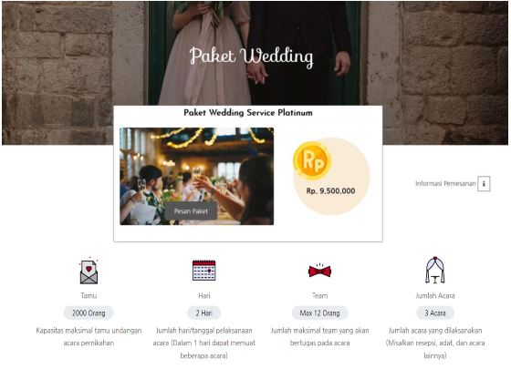
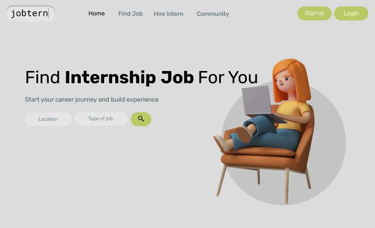
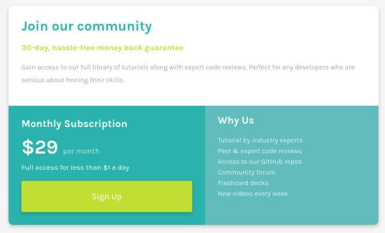

CONTACT
0857-5180-0000
giezkagustinveby@gmail.com
Jl.Temanggung Tilung
Palangka Raya, Indonesia
EDUCATION
Universitas Palangka Raya
Informatics Engineering August 2015-February 2021
- GPA : 3.43 out of 4.00
- Became Lab Assistant (September 2017-November 2017)
- Bappeda of Central Kalimantan (Internship September 2018-November 2018)
SMAN 2 Palangka Raya
Natural Science 2012-2015
- GPA : 80 out of 100
- English club member (2012-2013)
- English course (2013-2014)
PROJECT/EXPERIENCE

Wedding Organizer Web
2019 Web Development
Design and build a wedding organizer website where you can see the vendors, wedding packages, and do wedding organizer booking. Built using PHP, HTML, CSS, and Javascript

Designing Landing Page
2021 Web Design
Designing jobtern's landing page. jobtern is a job portal but just for Internship roles. Designed for students, fresh graduates, and job seeker.

Responsive Grid Card
2020 Web Front End
This is my solution for a frontendmentor.io challenge, responsive grid card using flex in HTML and CSS.